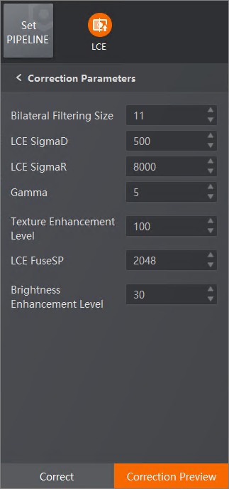

To improve the overall balance of light and dark tones in an image in low-light and uneven lighting situations, you can use adaptive local contrast enhancement to enhance the brightness of darker areas while maintaining the brightness of brighter areas unchanged.
The parameters of Local Contrast Enhancement (LCE) are as follows.
This parameter is a technique used for local contrast enhancement by combining bilateral filtering with contrast enhancement. In this method, a filter is applied to each pixel of the image, taking into account both spatial distance and intensity similarity. The filter calculates the average contrast of the pixels within a defined window around each pixel and adjusts the brightness of the pixels based on this average contrast value. The value ranges from 3 to 41.
It refers to the standard deviation of Gaussian blur, which ranges from 100 to 10,000. It means the amount of blur or smoothing applied to an image when using a Gaussian filter. It controls the size of the blur kernel and determines how much neighboring pixels contribute to each pixel during the blurring process. A higher standard deviation leads to a more pronounced blurring effect, which can be useful in reducing noise or creating a softer appearance. Conversely, a lower standard deviation preserves more image details and produces a less pronounced blur.
A larger standard deviation makes the bilateral filter's range weights more expansive, considering a wider range of color differences. Conversely, a smaller standard deviation makes the filter's weights more localized to nearby colors. This value ranges from 1,000 to 20,0000.
A higher gamma value may be suitable for images with low contrast or dull appearance, while a lower gamma value can be useful for reducing harsh contrast or preserving fine details in high-contrast images. This value ranges from 1 to 10,000.
This parameter is used to control the degree of texture enhancement when applying the LCE algorithm on a texture image. A higher value will enhance the contrast of the texture, making the details more distinct and prominent. Conversely, a lower value will weaken the enhancement effect, resulting in a more soft and natural image. This value ranges from 0 to 1,280.
This parameter refers to a point on a curve where the left and right sides have the same weight value and are symmetrically positioned. In brightness adjustment, if the weight value of a symmetric point increases, the pixel values on the left and right sides of that point will be enhanced with weighted value, thereby increasing the brightness of the image. The value ranges from 0 to 4,095.
This parameter is used to control the level of brightness enhancement in an image. A smaller value will result in a greater increase in image brightness. The value ranges from 0 to 256.

Figure 1 LCE Parameters